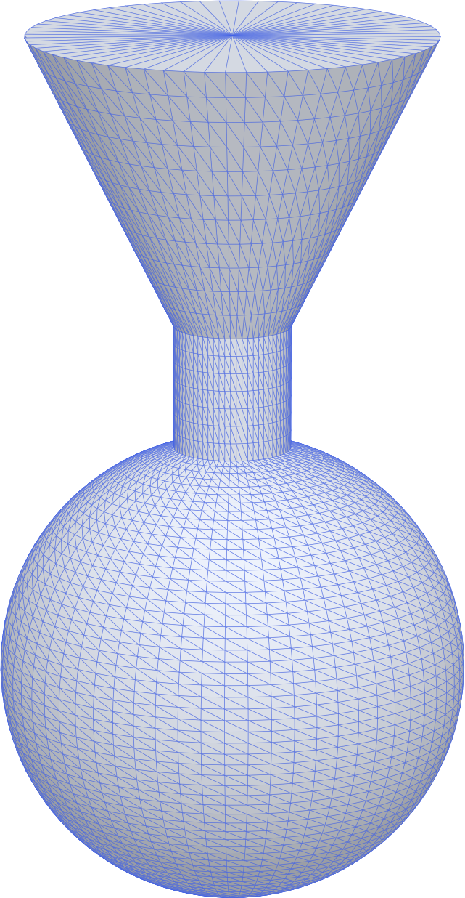
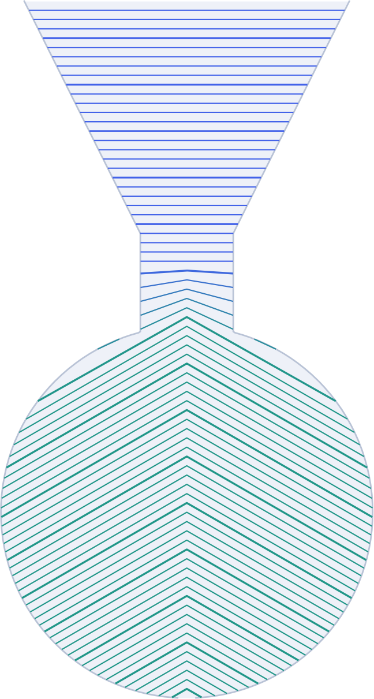
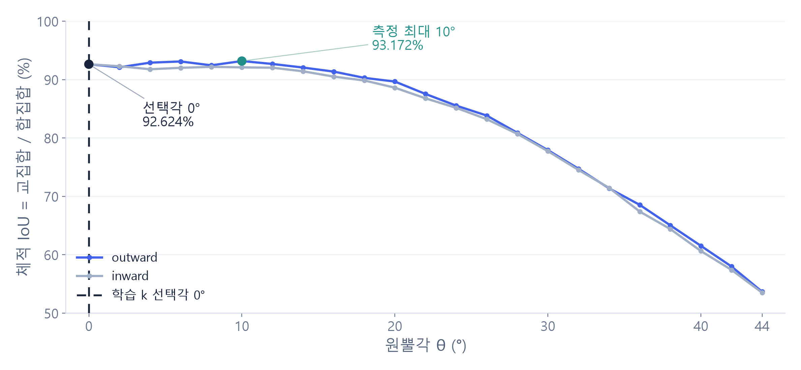
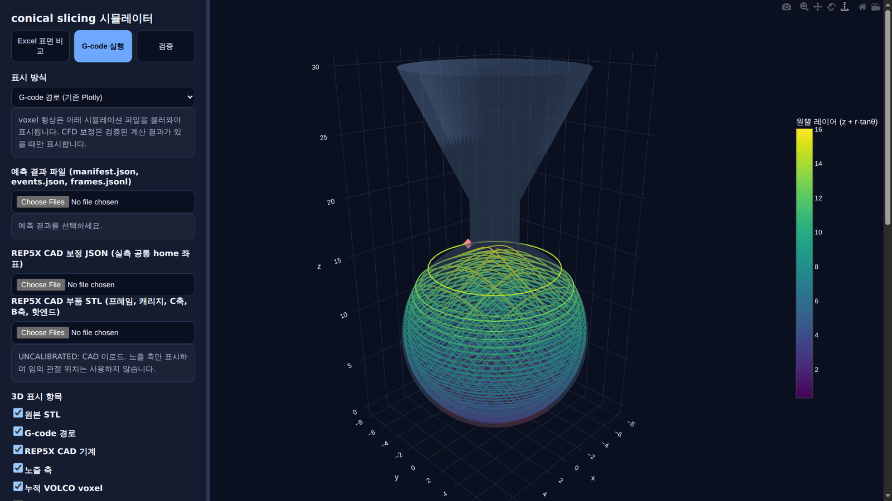
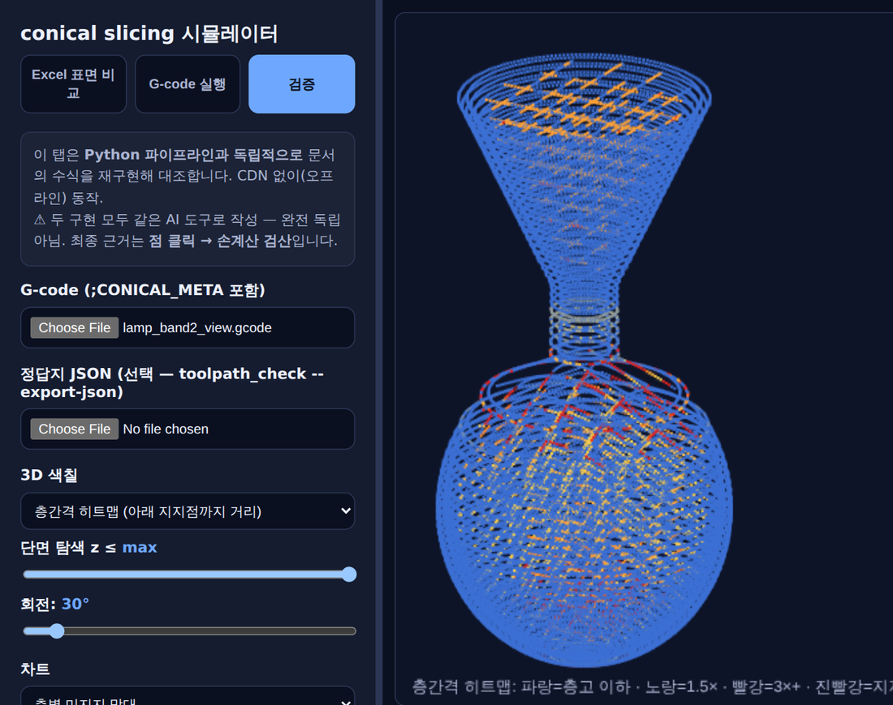
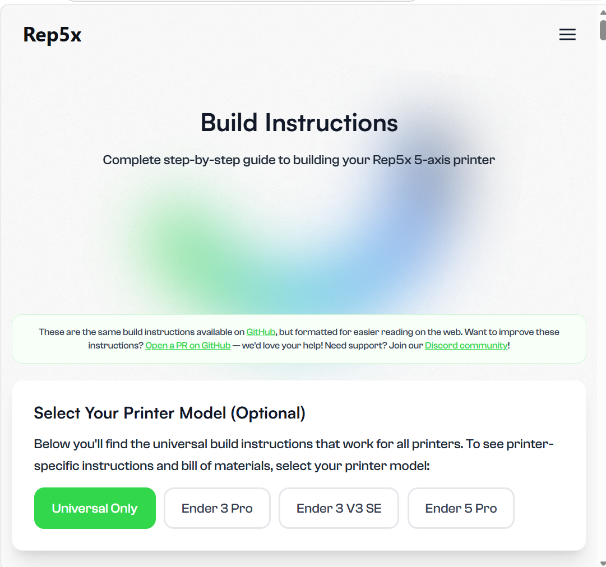
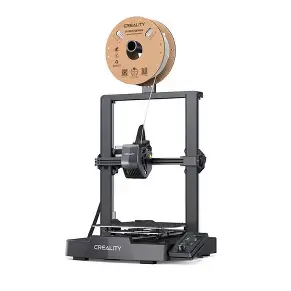
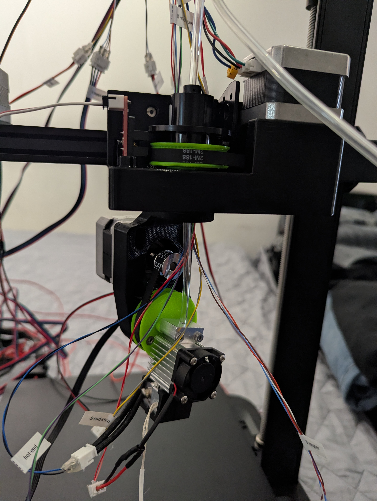

R&E · 2차 중간 발표
형상 적응형
원뿔 슬라이싱
10/12 R&E 2차 중간 발표
ADAPTIVE CONICAL SLICING
원뿔 레이어 개념도 · 드래그하여 회전
R&E · 2차 중간 발표
10/12 R&E 2차 중간 발표
1차 발표에서는 형상에 맞는 원뿔각과 높이 구간의 자동 결정이 중심이었다. 이번에는 코드 설계와 Ender-3 V3 SE 기반 Rep5x 제작·개조를 주요 성과로 소개한다. 1차 제목의 4축 연구에서 5축 헤드 구조를 사용하는 출력 플랫폼으로 확장한 이유를 연결해 말한다. 표지의 3D는 개념 설명이며 실제 출력 경로 또는 실측 장비 CAD가 아니다.
82f2c60dd3570c8b1681b6c552cdbd5098f13e34
OVERVIEW
각도 선택 알고리즘을 실제 출력 플랫폼에 연결하는 과정
완성한 코드와
하드웨어 구조를
하나의 연구 흐름으로
설명합니다
연구 성과와 검증 근거를 연결하고,
최종 출력 비교에서 확인할 항목을 정리합니다.
연구의 연속성과 주요 산출물
원뿔각 평가, k 학습, 결과 판단
파이프라인과 GUI
Rep5x 구조, 부품, 설계, 개조
형상 비교와 후속 연구
각도 평가부터 경로 생성, 장비 설계, 출력 확인까지의 흐름을 간단히 안내한다. 요청된 17장 구성을 그대로 유지했다.
01 · PREVIOUS WORK
형상에 맞는 원뿔각과 구간을 자동으로 정하는 기반 마련
평가함수 J 기반 선택과 오버행 연결 성분 I꜀ 기반 선택을 비교
구간별 원뿔각, STL 교선, G-code 경로를 화면에서 검토
구간 경계, 압출량, 축 제약, 간섭과 실제 출력의 연결을 과제로 설정
이번 발표는 이 기반 위에서 코드 설계와 5축 출력 구조를 설명합니다.
1차 발표 저장소의 실제 본문을 요약했다. 당시 주요 성과는 각도·구간 분석과 두 종류의 시각화 도구였다. G-code 연결 및 물리적 출력 검증은 후속 과제였다. 이번 성과와 대비할 때 당시 자료의 시점을 유지한다. 아치형 STL은 1차 발표 저장소 arch-01.stl이다.
82f2c60dd3570c8b1681b6c552cdbd5098f13e34
형상 적응형 슬라이서README, conical/selector.py, conical/rep5x.py
02 · CURRENT WORK
코드 설계 완료와 5축 프린터 제작·개조 진행 중
원뿔각 평가와 G-code 생성
경로 검사와 퇴적 형상 비교
결과를 반복 확인하는 검증 구조
Ender-3 V3 SE 본체 기반
Rep5x 헤드 회전 구조 적용
3D 프린터 제작·개조 진행 중
코드 설계는 완료했고 하드웨어는 제작·개조 중이다. 10월 제작, 11월 실험 예정이며 현재 상태 사진과 실물 출력 결과는 14·15장에 추가한다. 프로그램 설계 완료와 실물 출력 성능 검증은 별도 단계로 설명한다.
54385cf410ce50364076e071a61c3f85335a3c95
형상 적응형 슬라이서README, conical/selector.py, conical/rep5x.py
03 · SYSTEM GRAPH
모델 검사부터 경로 평가까지 연결하고, 평가 데이터로 k를 학습


오른쪽 그림: 입력 STL(examples/lamp.stl, 삼각형 9,856면)의 그물망과, 같은 모델을 가변각(아래 30° 원뿔 → 위 0° 평면)으로 자른 G-code(examples/lamp_expA_band2_lh04.gcode, 층고 0.4, 75층)의 레이어를 세로 단면에 그린 것이다. 각 층은 G-code의 층 높이 z′와 CONICAL_META 프로필 θ(z′)로 z = z′ − r·tanθ를 그렸다. 목 부근에서 층 사이가 벌어지는 것은 각도가 바뀌는 구간의 층간격 팽창이며 실제 경로에서도 나타난다(10장 검증 탭 히트맵의 노랑·빨강).
코드 출처(화면에서 뺀 설명): 직접 구현 — ΔS−k|θ| 선택기, 경로 순서 기반 지지 판정, Rep5x 자세 변환, k 학습과 IoU 집계. 외부 오픈소스 참고 — RotBot의 좌표 변환·역변환을 바탕으로 PrusaSlicer CLI 연결 및 내장 슬라이서 구현, Bambu Studio·OrcaSlicer는 CLI·설정 구조 비교 자료. 검사·복원 도구 — Trimesh·Shapely·SciPy 기하 연산, PyMeshLab·ADMesh 검사 어댑터, VOLCO 구형 퇴적 규칙에 B/C 방향 확장. 되돌리는 기준 — 생성 STL은 횟수를 제한해 재시도, G-code 실패는 원인을 기록하고 조건을 수정.
연결 그래프는 구현 모듈과 통합 제어 설계를 함께 설명한다. 공개 wjd main은 54385cf이고 Drive 소스는 e9bc3b0이다. 원뿔각 선택의 J와 후보 격자는 기존 selector를 그대로 사용한다. 모델 전체에 각도 하나를 적용하는 균일각 선택기이며 가변각 선택기와 구분한다. 간섭 검사의 핫엔드·B암 치수는 추정값이므로 장비 실측 전에는 충돌 안전을 판단할 수 없다. run_random_validation은 생성 STL 부적합일 때 max_generation_retries+1회까지 시도하지만 이미 선택된 G-code 생성 실패는 해당 사례에 기록하며 새 모델로 교체하지 않는다. 그래프의 G-code 실패 되돌림은 점선으로 통합 제어 설계라고 표시했다. 학습 데이터 연결도 별도 실행 프로그램 사이의 연결이며 모든 모듈이 하나의 자동 CLI로 통합됐다는 뜻은 아니다. Bambu Studio를 실행한 결과나 코드를 사용했다는 주장을 하지 않는다. 실제 이 발표의 G-code 반복 실험은 내장 슬라이서를 사용했다. OpenFOAM의 국소 유동 어댑터는 별도 범위이며 본 IoU 그래프에 사용하지 않았다.
conical/selector.py, conical/pipeline.py, tools/run_random_validation.py, tools/external/validators.py, conical/k_learning/*, docs/slicer_cli_analysis.md
04 · CORE ALGORITHMS
원뿔 슬라이싱으로 출력 명령을 만들고, 퇴적 복원으로 형상 일치도를 평가
1warped = transform_cone(fine.vertices, theta, direction)
2items = slice_mesh(warped, layer_height=0.3)
3real, stats = backtransform(items, theta, direction)
4rep, stats = to_rep5x(real, theta, direction, REP5X)
5rep, stats = add_c_rewinds(rep, REP5X)
6gc.write(rep, output_path)
7assert internal_gcode_check(output_path)["valid"]좌표 변환과 슬라이싱 선택한 원뿔각으로 STL을 변환해
평면 슬라이싱한 뒤, 경로를 원래 좌표계로 되돌리기
5축 명령 생성 경로를 Rep5x의 XYZ/B/C 명령으로 변환하고,
실제 경로 길이에 맞게 압출량 ΔE를 보정
파일 저장과 검사 C축 되감기를 넣어 G-code를 저장하고,
좌표 유효성과 B/C 회전 범위를 검사
1# G90/G91, M82/M83, G92를 해석해 ΔE와 자세 복원
2if event.delta_e > 0:
3 volume += pi * (filament_diameter/2)**2 * delta_e
4 needed = round(volume / voxel_size**3) - len(voxels)
5 center = tip + tool_direction(B, C) * 0.2
6 voxels.update(nearest_empty(center, needed))
7IoU = len(target & voxels) / len(target | voxels)압출과 자세 복원 G-code의 ΔE로 퇴적 부피를 계산하고,
XYZ/B/C로 노즐 끝을 이용해 위치, 방향 복원
퇴적 형상 재구성 VOLCO의 구형 퇴적 규칙에 방향을 반영해
가까운 빈 voxel을 채우고 누적 압출 부피를 맞춤
원본 STL과 비교 IoU = 교집합 부피 / 합집합 부피
1에 가까울수록 원본과 복원 형상 일치
왼쪽은 G-code 생성, 오른쪽은 VOLCO 기반 IoU 계산을 설명한다. 두 코드 박스는 기존 핵심 구현을 발췌·축약한 표현이며, 전체 실행 가능한 독립 함수는 아니다. 원뿔 좌표 변환은 (x/cosθ,y/cosθ,z+d*r*tanθ), 역변환은 (X*cosθ,Y*cosθ,Z′−d*hypot(X,Y)*sinθ)이다. ΔE는 실제 경로와 변환 경로의 길이비로 보정한다. Rep5x XYZ/B/C로 변환한 뒤 C축 되감기를 넣고 파일을 저장한다. internal_gcode_check는 G0/G1 파싱과 좌표 유한성을 확인하며 B/C 범위는 별도로 검사한다. 퇴적용 parse_motion_events는 G90/G91, M82/M83, G92 및 단위를 처리하며 G2/G3는 거절한다. RTCP XYZ는 팁 위치이며 B/C를 보존한다. VOLCO의 구형 퇴적 규칙을 B/C 방향에 맞춰 확장했고, 방향을 따라 0.2mm 이동한 중심과 노즐 평면 클리핑을 적용한다. 빈 voxel을 거리와 좌표의 동점 순서로 채워 누적 압출 부피를 1 voxel 이내로 맞춘다. nearest_empty 표현에서는 클리핑과 반경 증가를 생략했다. 코드의 IoU 한 줄은 한 측정 위치의 정의다. 8장 결과는 voxel 내부 네 측정 위치에서 얻은 평균 교집합 부피를 평균 합집합 부피로 나눠 집계한다. 이 결과는 G-code 퇴적 재구성과 원본 STL의 비교이며, 냉각·고화·처짐 해석이나 실물 스캔의 측정값은 아니다.
conical/transform.py, conical/backtransform.py, conical/pipeline.py, conical/deposition_events.py: parse_motion_events, tools/external/volco_oriented.py, tools/deposition_iou_sweep.py, tools/check_deposition_phases.py
05 · LEARNING k
시드 3개로 다시 학습해 선택 비교
k_predictor는 38→32 ReLU→16 ReLU→1 Softplus의 작은 MLP이며 정답 k를 바로 회귀하는 MSE baseline도 구현돼 있다. 이 장의 실제 재학습은 IoU regret를 최소화하는 방식이고 MSE 곡선이라고 부르지 않는다. Q는 0~1 IoU, G와 T는 %p, θ는 degree, k는 %p/degree다. softmax는 학습에만 사용하고 추론은 select_cone의 hard argmax를 유지한다. 원본 50-STL 각도별 기하근사 IoU와 원본 STLs를 사용해 seed42/43/44로 재실행했다. 매 STL 도착 후 기존 데이터 전체를 다시 사용해 20회 Adam 업데이트하고 50개 후 동일 고정 데이터로 추가 학습한다. initial_k=.2, lr=.003, weight_decay=1e-4, T 1→.1, 고정 단계 T=.1. 각 실행의 총 업데이트는 1000+540,1000+400,1000+240. 평균 k는 각각 2.133259,4.157754,1.676892. 전체 50개를 학습에 사용한 내부 수렴 검증이며 보지 않은 STL 성능을 측정한 실험은 아니다. 고정 단계 종료 기준은 최근100 업데이트 동안 선택 인덱스 동일, 개별 k 최대 변화폭<.01, loss 범위<1e-5. mushroom_03의 예측 k는 각각 1.629244,3.680339,1.090967로 다르지만 세 시드 모두 outward 0°를 선택했다. 넓은 k 범위가 같은 선택을 내므로 이 기록으로 k를 하나로 정할 수 없다. 수직선의 경계 1.0587은 원본 selector에서 mushroom_03의 J(12°)=J(0°)가 되는 k이며, 그보다 작으면 12°, 크면 0°를 고른다. 기본 k=0.2는 12°를 고른다. 가장 가까운 seed44의 1.091은 경계보다 약 3% 위라 여유가 작다. 8장에서 0°와 12°의 IoU 차(0.046%p, 12°가 높음)는 voxel 0.3mm에서 순위를 가릴 수 없는 크기다. Drive 원본은 다른 실행에서 평균3.233567을 기록했으나 이번 그래프는 이번에 실제 다시 실행한 기록으로 생성했다. 수렴 곡선(assets/figures/k-convergence.png)은 화면에서 빼고 아래 출처 링크로 남겼다. 세 시드 모두 종료 기준(최근 100회 선택 유지, k 변화폭 0.01 미만)을 만족했다. 학습 단계: 손실의 기울기가 k와 MLP 가중치를 갱신하고, 새 STL 추론에서는 k를 예측한 뒤 기존 J의 최대 후보를 선택한다.
conical/k_learning/model.py, features.py, loss.py; tools/run_cumulative_k_learning.py, tools/settle_cumulative_k.py; assets/data/learning-traces.csv, learning-repeats.json
06 · TWO-WAY CHECK
오버행은 판정식으로, 형상은 퇴적 복원으로
판정식 재유도 일치
팀원 구현과 일치
정답 대조 (원기둥)
검사기 오판 수정

A 갈래(재혁): 판정식 g(θ)=n_z cosθ + d n_r sinθ < κ와 면별 임계각 θ*를 세 번 따로 다시 유도해 코드와 대조했다(20,000 법선, 최대 차 7.6e-14°). 이 재유도는 같은 AI 도구로 했고 식이 CLAUDE.md에 적혀 있어 완전 독립은 아니다. 팀원 구현과는 3모델×2방향 약 22,000면에서 임계각 최대 차 1.42e-14°. 구현 독립이지 가정 독립은 아니므로 정답을 아는 입력(수직 원기둥·직육면체 θ=0 → 0%p, 60° 원뿔 → 0.5%p 초과)으로 따로 검정했다. 그 과정에서 툴패스 검사기의 베드 지지 규칙이 평면 층을 가정해 원뿔 층에서 공중 점 48개를 베드 지지로 세던 결함을 찾아 고쳤다. 같은 대조에서 critical_angle의 도달 불가 판정이 과엄격한 잠재 결함(F1)도 나왔으나 실제 메시 영향은 0면이고 주 파이프라인은 무관하다.
B 갈래(팀원): Drive 데이터 중 mushroom_03 하나에만 실제 G-code 생성과 복원 46조건 전체가 확보돼 있다. 최고 성능의 임의 모델이라고 부르지 않고 전체 후보 결과가 있는 대표 모델로 선정했다. 50개 STL의 이상적 적층 기하근사 label을 실제 출력 형상과 혼합하지 않았다. 동일 원본 STL과 고정 좌표의 구형 퇴적 복원을 비교했으며 각 voxel 내부의 4개 측정 위치에서 교집합 부피와 합집합 부피를 구한 뒤 평균 교집합/평균 합집합으로 집계했다. 4개 측정 위치는 독립 퇴적 실행4회가 아니다. 이번에 0°,10°,12°를 각각3회 실제로 G-code 생성 및 전체 퇴적 재실행했고 매 각도 G-code SHA256, occupied voxel SHA256, IoU가 모두 일치했다. 선택0° IoU .9262427386, 측정최대10° .9317155299, 기본k=.2가 선택한12° .9267034221. 학습 k 선택은 기본 k 대비 .046068%p 낮으며 이번 실험의 성과는 실행 재현과 평가 결과 확인이다. 계산상 최대와의 IoU 차이는 .547279%p다. outward 0–12°의 이웃 각도 간 IoU 차이 절댓값 평균은 .569016%p로 약 .57%p이며 오차 범위나 신뢰구간이 아니다. voxel .3mm의 해상도 수렴을 확인하지 않아 이 차이로 정밀한 각도 순위나 학습 개선을 확정하기 어렵다. mushroom_03은 학습에 사용한 50개에 포함된다. 동일 해시의 반복은 결정적 계산의 재현성을 보여주며 수치 정확도를 보장하지 않는다. 원본 selector의 k 선형 envelope는 이 모델에서 경계1.05870556527을 사이에 12°와0°만 도달 가능해, k값 하나를 바꾸는 것으로10°를 선택할 수 없다는 구조적 결과를 얻는다. 이를 실제 프린터 품질의 최고각 확정이라고 말하지 않는다. 냉각/고화/처짐을 해석하지 않는 구형 퇴적 재구성이며 실물 출력 자료는15장에 추가한다.
tools/deposition_iou_sweep.py, tools/check_deposition_phases.py, conical/k_learning/baselines.py; assets/data/angle-iou.csv, deposition-repeats.csv, provenance.json
07 · PIPELINE DESIGN
선택 조건부터 출력 결과까지 같은 실험 ID로 연결
STL 품질, 좌표계,
공통 출력 조건
model.stl
case.json
k와 평가식,
전환·층간격 제약
selection.json
profile.json
변환과 역변환,
Rep5x B/C 자세
output.gcode
CONICAL_META
경로·기계 검사,
퇴적·국소 물리 해석
manifest.json
final.stl
평면·고정각·가변각,
원본·예측·실물 비교
metrics.json
report + log
모델 ID · 코드 버전 · k · 각도·구간 · 층높이 · 기계·재료 설정 · 검사 상태
실패 사례와 지원되지 않는 검사도 같은 기록에 남겨, 결과를 다시 확인할 수 있게 설계
앞 장의 각도 평가와 검사·형상 비교를 하나의 파이프라인으로 묶는 설계안이다. conical.pipeline은 고정각 경로 생성 분기를 제공하고, conical_slice.py는 가변각/자동 밴드 CLI를 제공한다. 실제 저장소에 존재하는 CONICAL_META, manifest.json, events.json, frames.jsonl, final.stl, metrics.json은 재사용한다. case.json, selection.json, profile.json의 공통 실험 스키마는 발표용 설계 제안이며 구현 완료된 파일이라고 단정하지 않는다. 각 실험의 실패와 지원 불가 상태를 포함해야 한다.
54385cf410ce50364076e071a61c3f85335a3c95
형상 적응형 슬라이서README, conical/selector.py, conical/rep5x.py
R&E 2학기 · 코드 검토 결과2학기 프로젝트 내 대화. 설계 방향 참고, 실측값의 출처로 사용하지 않음
08 · GUI
각도는 명령줄에서 정하고, 결과는 브라우저에서 확인


tools/slicing_simulator.html의 실제 화면이다. HTML 파일(rep5x_scene.js 동봉)이라 설치 없이 브라우저에서 열린다(3D 표시는 CDN의 Plotly·three.js를 쓰므로 발표 노트북은 인터넷 연결이 필요하고, 검증 탭은 오프라인 동작). 왼쪽은 G-code 실행 탭: conical_slice.py가 만든 램프 가변각 밴드 G-code(examples/lamp_expA_band2_lh04.gcode, 아래 30° → 위 0°, 층고 0.4)를 65% 지점까지 재생했고 lamp.stl을 반투명으로 겹쳤다. 오른쪽은 검증 탭: 같은 G-code를 Python 검사기와 따로 작성한 JS 구현으로 다시 계산해 아래 지지점까지의 거리를 색으로 칠한다. 점을 클릭하면 숫자를 대입한 식이 나와 계산기로 따라 칠 수 있다. 두 구현 모두 같은 AI 도구로 작성해 완전 독립은 아니다. 화면에 보이는 미지지 압출 %는 인필을 포함한 원시 값이므로 오버행 지표로 인용하지 않는다. 캡처에는 머신 시작 블록의 프라임 선(X5→X100)을 뺀 사본을 썼다 — 경로 자체는 동일하다. 현재 GUI는 확인 도구이며 각도를 고르거나 G-code를 만드는 버튼은 없다. 각도 결정과 G-code 생성은 명령줄에서 한다.
tools/slicing_simulator.html, conical_slice.py, rep5x_check.py; 캡처 입력 examples/lamp_expA_band2_lh04.gcode, examples/lamp.stl
09 · FIVE-AXIS STRUCTURE
기존 XYZ 이동에 헤드 기울기 B와 방위 회전 C를 추가


Rep5x는 head-head 구조다. C축이 yaw, B축이 tilt이며 회전 헤드가 캐리지에 장착된다. Open5x의 베드 회전 기구학을 동일하게 적용하면 안 된다. 여기의 3D는 사용자 요청에 따른 축 설명 개념도다. 부품 크기·장착 변환·장비 도달 영역은 실측 또는 검증된 조립 CAD를 나타내지 않는다. 발표용 G-code를 G0/G1, G90/G91, M82/M83, G92로 해석하고 XYZ/B/C/E/F를 시간에 따라 보간한다. 노즐 끝을 목표 XYZ로 보정하고 G1의 E가 증가하는 구간에만 재료를 누적한다. 예시 출력물은 40층의 내부를 채운 모래시계형 모델이다. 저장소 backtransform.py의 outward 원뿔 역변환 z=z′−r·tanθ를 따른다. 중앙 꼭짓점의 법선 특이점은 r 대신 sqrt(r²+1.8²)−1.8로 정규화한다. 첫 층은 베드에 접하는 평면이고 이후 원뿔각을 0–18°로 부드럽게 증가시킨다. B는 각 점의 국소 법선 기울기, C는 방위각으로 계산하므로 임의로 한 축을 고정하지 않는다. 원뿔면 위 두 겹 외벽과 0.9mm 간격의 100% 지그재그 내부 채움을 생성하며 인접 층에서는 채움 방향을 90° 교대한다. 내부 경로는 1.2mm 이하로 분할하여 각 점의 Z/B/C를 역변환한다. E는 실공간 길이와 국소 층두께로 계산하며 이동 시 리트랙션·안전 높이·C 되감기를 표시한다. 기본 재생은 3배, F1200mm/min로 이전 12배 외벽 시연보다 느리다. 출력 완료 후 1.7초 동안 형상을 보여주고 반복한다. G-code와 축 범위는 발표용으로 생성한 예시이며 실제 장비에 실행할 파일이 아니다. 실제 RTCP 검증 결과가 아니다. 공식 웹은 마지막 출처와 메모에서만 링크한다. 기존 Rep5x와 Ender-3 V3 SE의 각 세 항목 설명을 유지한다. 사용자 제공 배치도에 맞춰 왼쪽에는 본문 높이를 채우는 세로형 3D 뷰어를 둔다. 오른쪽 위는 Rep5x 설명과 웹사이트 이미지, 오른쪽 아래는 프린터 사진과 Ender-3 V3 SE 설명을 각각 나란히 배치한다. 두 이미지의 원래 비율을 보존한다. 사용자 요청으로 축 슬라이더, 재생 버튼, 속도, 상태와 G-code 표시는 제거하고 자동 반복 출력만 유지한다.
웹사이트 화면: 사용자가 첨부한 Rep5x Build Instructions 이미지. 실제 웹페이지가 아닌 화면 캡처.
Rep5x 공식 설계9c437d5cce7766d641e7aa35ced2c63231148a1f
Rep5x 공식 웹Ender 3 V3 SE 개조 안내
R&E 2학기 · 코드 검토 결과2학기 프로젝트 내 대화. 설계 방향 참고, 실측값의 출처로 사용하지 않음
10 · PARTS LIBRARY
공통 부품 6종과 Ender-3 V3 SE 전용 장착부 4종

공통 부품
Ender-3 V3 SE 전용
모든 단품 메시를 Rep5x 공식 저장소의 current/3mf에서 추출했다. 원본 파일을 함께 제공한다. 공통 부품: B arm, C driven pulley, B driven pulley, hotend spacer, slip-ring holder, 3 mm spacer. Ender 3 V3 SE 전용: carriage mount, extruder mount, X/Z endstop mounts. 단품은 뷰어 중앙으로 이동해 표시하며 실제 조립 좌표계·출력 방향을 의미하지 않는다. 표시 치수는 파일의 경계상자이며 측정한 장비 치수가 아니다. 공식 CAD를 팀이 직접 설계한 부품으로 주장하지 않는다. 팀의 재설계가 있다면 수정 형상과 원본을 대응시킨다.
왼쪽 사진은 Ender-3 V3 SE에 장착한 Rep5x 헤드의 공식 조립 사진이다. 선은 슬립링 홀더, C축 구동 풀리, B축 회전 암, B축 구동 풀리의 위치만 표시한다. 팀이 직접 촬영한 제작 사진이 아니다. 부품 목록을 선택하면 단품 3D 모델과 해당 연결선이 강조된다.
9c437d5cce7766d641e7aa35ced2c63231148a1f
R&E 2학기 · 코드 검토 결과2학기 프로젝트 내 대화. 설계 방향 참고, 실측값의 출처로 사용하지 않음
11 · HARDWARE INTERFACE
선택한 원뿔각을 실제 노즐 위치와 자세에 연결
원뿔 워핑의 역변환과 기계 역기구학 보정을
각각 담당 모듈에 한 번씩 적용합니다.
내용이 미정이었던 13장을 코드에서 하드웨어로 넘어가는 연결 장으로 구성했다. nozzle TCP 위치 및 B/C 자세 입력의 의미와 보정 책임을 정리한다. 현 저장소는 Rep5x-Marlin PENTA_AXIS_HH 및 기본 TCP 제어 ON을 기록하지만 실제 장비의 펌웨어 버전을 확인해야 한다. LB/LC 기본값은 사용자의 실측값으로 간주하지 않는다. 슬립링의 기계적 연속 회전과 펌웨어 C축 ±360° 창은 서로 다른 제약이며, 저장소에 C 되감기 처리 코드가 있다. full assembly CAD의 측정된 rigid transforms 없이 단품 모델만으로 정확한 조립 또는 간섭 통과를 주장하지 않는다.
README, conical/selector.py, conical/rep5x.py
원뿔각 평가·검증 코드54385cf410ce50364076e071a61c3f85335a3c95
Rep5x 공식 설계9c437d5cce7766d641e7aa35ced2c63231148a1f
R&E 2학기 · 코드 검토 결과2학기 프로젝트 내 대화. 설계 방향 참고, 실측값의 출처로 사용하지 않음
12 · PRINTER RETROFIT
Ender-3 V3 SE 본체에 Rep5x 헤드 회전 구조 적용 (제작 진행 중)
사진 추가 예정
Ender-3 V3 SE 전체 · 기존 헤드와 캐리지
기존 XYZ 이동 구조와
원점 센서 위치 확인
사진 추가 예정
C축 구동부와 B축 암 근접
캐리지 마운트, 풀리, 베어링,
핫엔드와 슬립링 연결
제작 완료 후 추가
정면·측면 · 외장 압출기와 배선
외장 압출기, 엔드스톱,
제어보드·펌웨어 구성
기존 부품 대비 추가·교체한 부위와 선택 이유
축 구동, 원점 복귀, 보정 결과와 짧은 동작 영상
프린터 제작·개조는 진행 중이다(10월 제작, 11월 실험). 이 장은 개조 계획과 완료 후 남길 기록을 보여주며, 완료로 말하지 않는다. 공식 시연 사진을 팀 장비 사진처럼 사용하지 않고 실제 사진 요청을 남겼다. 사진에 어떤 구조가 보이면 좋을지 구체적으로 적었다. Ender 3 V3 SE용 설계는 외장 압출기 마운트와 X/Z endstop mount를 포함한다. 실제 설치한 제어보드나 모터·드라이버 모델은 자료가 없으므로 임의로 채우지 않았다. 장비 상태와 팀의 직접 수정 부품을 중심으로 최종 문구를 보완한다.
9c437d5cce7766d641e7aa35ced2c63231148a1f
R&E 2학기 · 코드 검토 결과2학기 프로젝트 내 대화. 설계 방향 참고, 실측값의 출처로 사용하지 않음
13 · PRINT VERIFICATION
같은 모델을 평면·균일각·가변각으로 출력해, 오버행 기준과 IoU 기준 중 어느 쪽이 실물과 맞는지 가린다
모델 크기와 기준 치수를 고정
G-code 시뮬레이션 STL 또는 캡처
같은 좌표계·크기·시점
IoU와 누락·과잉 형상 확인
같은 시점의 실물 정면·측면
크기 기준 또는 측정 눈금 포함
치수, 표면, 실패 위치와 시간 기록
| 비교 방법 | 오버행 실패 (처짐 위치·길이) | 대표 치수 오차 (mm) | 출력 시간 (min) | 재구성 IoU |
|---|---|---|---|---|
| 평면 | 11월 실험에서 측정 (아직 출력 0건) | |||
| 균일각 원뿔 | 11월 실험에서 측정 (아직 출력 0건) | |||
| 가변각 원뿔 | 11월 실험에서 측정 (아직 출력 0건) | |||
요청한 형상 출력 확인 장을 원본–수치 재구성–실물의 비교 구조로 만들었다. 현재 왼쪽은 1차 참고 arch-01.stl이다. 최종 대표 출력 대상과 다르면 해당 STL로 교체한다. 재구성 및 실물 자료가 전달되지 않았으므로 임의 수치와 성공 사진을 만들지 않았다. IoU는 어떤 형상 사이의 비교인지 명시해야 한다. 시뮬레이션의 IoU와 실물 스캔의 IoU를 같은 값으로 취급하지 않는다. 같은 개조 장비에서 평면/고정각/가변각을 비교하면 장비 차이의 영향을 줄일 수 있다. 선폭·층고·재료·인필·노즐 조건도 공통으로 기록한다.
54385cf410ce50364076e071a61c3f85335a3c95
1차 중간 발표82f2c60dd3570c8b1681b6c552cdbd5098f13e34
R&E 2학기 · 코드 검토 결과2학기 프로젝트 내 대화. 설계 방향 참고, 실측값의 출처로 사용하지 않음
14 · NEXT STEPS
설계한 시스템의 성능을 재현 가능한 출력 비교로 확인
학습 k(≥1)는 잘록한 모델도
평면(0°)으로 보냄 → IoU와
오버행을 함께 보는 J 설계
회전 중심과 TCP 확인
축 부호·원점·리밋 확정
간섭 및 반복 오차 측정
동일 장비에서
평면·균일각·가변각 비교
형상·시간·실패 사례 기록
GUI에서 각도 결정까지 연결
입력 조건과 결과 저장
팀 외부에서도 재현 확인
설계·제작 성과의 다음 단계는 실물 출력 검증과 프로그램 통합이다. k 학습은 2학기 프로젝트 대화의 방향을 반영했고, 실제 데이터가 확보되면 global k보다 형상별 k가 개선되는지 평가한다. 01의 근거: 학습된 k는 시드별 평균 1.68–4.16으로 기본값 0.2보다 크다. slicer의 J-최적 격자(허리 r=3, 램프)에 J(k)=J0+(0.2−k)·평균각을 다시 적용하면 k=0.2에서는 밴드 [28°,0°]·[24°,0°]가 선택되지만 k≥1에서는 [0°,0°] 평면이 선택된다. IoU 기준 k가 오버행이 큰 모델에서도 원뿔을 끄는 셈이라, 두 기준을 함께 보는 목적함수가 필요하다. 이는 위 격자에서 다시 계산한 결과이며 새 학습 실험은 아니다. 물리 해석 모델에는 장비·재료 보정과 B/C 자세 반영이라는 한계가 있어 이를 후속 과제로 남긴다. 특정 방법이 항상 더 낫다는 결론을 미리 정하지 않는다.
형상 특징 기반 k 예측, 학습과 추론 분리 설계
R&E 2학기 · 코드 검토 결과2학기 프로젝트 내 대화. 설계 방향 참고, 실측값의 출처로 사용하지 않음
원뿔각 평가·검증 코드54385cf410ce50364076e071a61c3f85335a3c95
15 · REFERENCES & CLOSING
형상에 맞는 원뿔각 선택을
실제 출력으로 검증하겠습니다
R&E 2차 중간 발표
김재혁 · 나준우 · 김진우
감사합니다
설계 방향 참고: R&E 2학기 프로젝트의
‘코드 검토 결과’, ‘역전파 기반 k값 결정’ 대화
출처는 이전 발표, 본 연구 코드, Rep5x 원본 설계, 발표 구현으로 나눴다. Rep5x 공식 CAD와 팀의 제작·수정 기여를 구분한다. 공식 웹은 출처로만 언급했다. 재학습 곡선, G-code 퇴적 재구성, 기구학 개념도와 실물 자료의 구분은 해당 장에서 표시했다. RotBot의 변환과 VOLCO 구형 퇴적 규칙을 참고하며 PyTorch는 역전파, Pandas·Matplotlib은 그래프 이미지 생성에 사용했다. 코드는 커밋 기준, 채팅은 설계 방향 참고로 기록한다. 웹 출처 확인일 2026-10-10.
RotBot · 좌표 변환VOLCO · 구형 퇴적 규칙PrusaSlicer · CLI 연결Bambu Studio · 설정 및 CLI 구조 비교Drive 원본 코드·실험 묶음82f2c60dd3570c8b1681b6c552cdbd5098f13e34
원뿔각 평가·검증 코드54385cf410ce50364076e071a61c3f85335a3c95
형상 적응형 슬라이서README, conical/selector.py, conical/rep5x.py
Rep5x 공식 설계9c437d5cce7766d641e7aa35ced2c63231148a1f
Rep5x 공식 웹Ender 3 V3 SE 개조 안내
Three.jsMIT, 발표 구현 r128
R&E 2학기 · 코드 검토 결과2학기 프로젝트 내 대화. 설계 방향 참고, 실측값의 출처로 사용하지 않음
R&E 2학기 · 역전파 기반 k값 결정형상 특징 기반 k 예측, 학습과 추론 분리 설계
← → 이동 · N 발표자 메모 · M 준비 메모 · P 발표 모드 · F 전체 화면